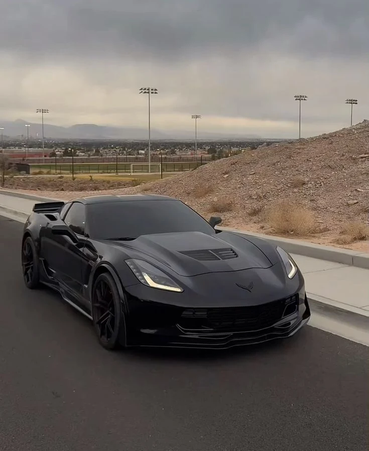

01 / Đường mở
CHỈ CÒN XE.
VÀ CON ĐƯỜNG.
Thân xe thấp, những đường gân sắc và ánh đèn chạy dài. Giữa không gian rộng mở, C7 hiện lên đúng với cá tính vốn có.
Không cần ồn ào để được chú ý.
Xem chuyển độngZEPHYRON / Corvette
Rời ánh đèn studio. Đi qua những cung đường, chạm vào hoàng hôn. Mỗi khung hình là một cảm xúc khác.

01 / Đường mở
Thân xe thấp, những đường gân sắc và ánh đèn chạy dài. Giữa không gian rộng mở, C7 hiện lên đúng với cá tính vốn có.
Không cần ồn ào để được chú ý.
Xem chuyển động02 / Giờ vàng
Khi bầu trời chuyển sang sắc ấm, bề mặt xe bắt lấy những tia sáng cuối ngày. Một khoảnh khắc chậm lại, đủ để nhìn kỹ từng đường nét.
Một khung hình. Một nhịp thở.
Xem ảnh Corvette03 / Tinh thần tốc độ
Đường băng, ánh chiều và những hình khối mạnh mẽ. Một góc nhìn khác về tinh thần Corvette, nơi dáng vẻ đã kể phần đầu của câu chuyện.
Khung hình thuộc bộ sưu tập cảm hứng Corvette.
Khám phá bộ sưu tậpThước phim / Corvette
Ánh sáng lướt qua thân xe.
Chuyển động kể tiếp câu chuyện.
01 / C7 & C8 · 00:11
C7 xám và C8 xanh dưới ánh đèn trạm xăng. Những góc máy tiến gần vào đầu xe, logo và ánh đèn đặc trưng của hai thế hệ Corvette.
Âm thanh tắt sẵn. Bật tiếng trong trình phát khi bạn muốn.
Thước phim tiếp theoChưa tải được video. Thử mở video riêng.
02 / C7 after dark · 00:09
Từ đầu xe, dọc thân xe đến khoang lái và cụm đèn hậu. Chiếc C7 xám hiện lên trong ánh sáng cuối ngày, mạnh mẽ ở mọi góc nhìn.
Dùng nút toàn màn hình để xem trọn thước phim.
Giữ lại khoảnh khắcChưa tải được video. Thử mở video riêng.
Chậm lại một nhịp